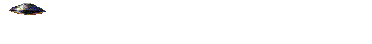
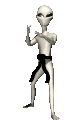
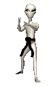

U.F.O.s


If they arent real then someone explain why I keep seeing them!!! The government loves keeping everyone out of the loop and I say enough.Ever Since Roswell our planet has been visitied by other worldly creatures that come on missions of peace (usually). They only wish to observer us and learn our ways. Hopefully these celestial beings will see this website with their advanced alien internet and they will finally make themselves known. And to those aliens reading my humble website I say hello and welcome to our planet!


 
